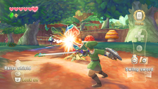
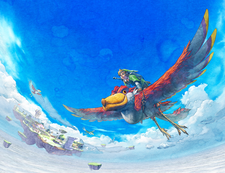

■ The Legend of Zelda: Skyward Sword

The Legend of Zelda: Skyward Sword (La Leyenda De Zelda: La Espada Del Cielo) es un juego de acción-aventura para la videoconsola Wii. Desarrollado por Nintendo Entertainment Analysis and Development con la colaboración de Monolith Soft. Fue lanzado el 18 de noviembre de 2011 en Europa y el 20 de noviembre de 2011 en América. El juego utiliza de forma obligatoria el periférico Wii MotionPlus. Se vendió junto a un Wii Remote Plus dorado o de forma independiente y ambas incluían un CD con piezas orquestadas de la franquicia en las primeras unidades.
■ Jugabilidad
Skyward Sword integra fuertemente el uso del Wii Motion Plus; en la esgrima, por ejemplo, los movimientos que el jugador realice con el mando serán transmitidos en el juego en la espada de Link. Esto permite a la espada ser utilizada para resolver rompecabezas en mayor medida que en títulos anteriores: por ejemplo, derrotar a una Baba Deku requiere que Link haga un golpe de espada vertical u horizontal dependiendo de la posición de la boca del enemigo, y ciertos bloqueos en las mazmorras requieren una cierta combinación usando la espada en ciertas direcciones para desbloquearlos.

Otros objetos se pueden controlar con el Wii Motion Plus, tales como bombas, tirachinas, látigo y el nuevo telescarabajo. Link podrá actualizar sus objetos mediante ciertos tesoros o artefactos recuperados al derrotar a los enemigos, los cuales incluyen su escudo y el telescarabajo. Además, Link será capaz de utilizar la Lira de la Diosa, lo que implicará el uso del Wii Motion Plus.
Un medidor de resistencia permitirá diversas acciones, tales como correr a una velocidad considerable. A diferencia de anteriores entregas, el consumo de pociones se produce en tiempo real. La pantalla también será ajustable en algún grado. Al igual que en la versión de Wii de Twilight Princess, Link será diestro para dar cabida a la mayoría de los jugadores diestros, en lugar de ser zurdo como habitualmente. El juego no incluye una opción para cambiar la mano dominante.
Para viajar entre las islas flotantes de Celéstea, Link montará en su pelícaro rojo. Estas aves pueden ser convocados al saltar y silbar desde varios puentes colocados alrededor de las islas flotantes. Cualquier persona que salte desde un puente será recogida en el aire por un pelícaro.
Skyward Sword tiene un enfoque mucho más grande que anteriores entregas de la franquicia. Las ubicaciones que pueden parecer pequeñas al principio con el transcurso del juego se podrán profundizar en esa área. Por ejemplo, Link sólo puede acceder al Lago Faroria en el Bosque de Farone después de haber terminado la tercera mazmorra. Este sistema ha sido comparado al estilo de exploración no lineal de la saga Metroid.
■ Historia
Prólogo
Siglos antes de los acontecimientos del juego, la Diosa Hylia , protectora de la Trifuerza, luchó contra un gran mal que amenaza con destruir el mundo entero. Para proteger a la raza de los seres humanos de ser aniquilados, los envió lejos, por encima de las nubes, elevando la tierra. Junto con el resto de razas del mundo, Hylia combatió las fuerzas malignas oscuras, y finalmente logró sellar el poder maligno. La leyenda de la diosa se transmitió de generación en generación entre los seres humanos que llegaron a vivir en Altárea, el centro de la civilización humana en el cielo.
Inicio

Siglos más tarde, Link (Conocido más por Zelda, por quienes no han jugado el juego), un joven residente de Altárea y estudiante de la Academia de Caballeros, tiene el objetivo de convertirse en uno de los Caballeros de Altárea, protectores de las personas que residen en el cielo. Todos los habitantes de Altárea tienen su propio pelícaro, aves poderosas que los llevan en sus espaldas con las que pueden surcar los cielos. Link es un experto jinete de aves y posee un raro pelícaro de color rojo. El juego comienza cuando está a punto de iniciarse el Torneo Celeste. El ganador del torneo pasará al grado superior de la Academia de Caballeros y recibirá un paracaídas de parte de Zelda, amiga de la infancia de Link y hija de Gaépora, director de la academia. Sin embargo, Malton, rival pomposo y engreído de Link, intenta impedir la participación de Link secuestrando a su pelícaro, esperando que el torneo continuará sin él. Sin embargo, el torneo se retrasa para que Link puede encontrar su ave perdida. En una visión, Link ve a su pelícaro sellado dentro de una pequeña cueva en la parte inferior de la isla, más allá de la cueva de la cascada. Utilizando una espada de práctica que le dio Aquilo, Link entra en la cueva de la cascada y libera a su pelícaro. A pesar de los esfuerzos de Malton y sus secuaces Corvy y Vestro para detenerlo durante el Torneo Celeste, Link consigue la estatuilla y resulta ganador del torneo.
Leer más